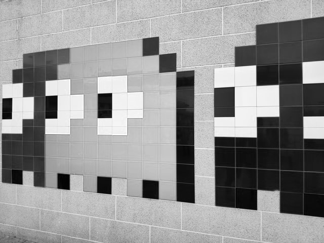

NoiseSampler¶
See also
A sampler is a config defined function that provides a value when given a position and seed.
A ‘sample’ is defined as the value produced by a single calculation provided by a sampler. A collective set of samples is regarded as ‘noise’.
Noise produced by noise samplers determine some kind of behaviour for each block or column. This behaviour is dependent on the context of the sampler definition.
Types¶
Different types of NoiseSampler provide different behaviours and may have additional parameters for configuring that behavior.
The type is specified by setting the type parameter to the name of the type. If the same name is used by two different addons, you can prefix the name with ADDON_NAME: to specify which one to use.
A list of available types for NoiseSampler are listed below:
DISTANCE¶
*Type requires the ‘config-noise-function’ addon to use
Returns the distance from a point.
distance-function String - The function used to calculate distance between sample positions and the configured point.
Default: Euclidean
Valid values:
Euclidean- Regular distance calculated using the Pythagorean theorem. See the Wikipedia page for more info.EuclideanSq- Same asEuclideanbut the result is squared. (This is included if exact distance is not needed, and is slightly faster thanEuclideanas it avoids a slowsqrtcall.)Manhattan- See the Wikipedia page for more info.
normalize Boolean - If set to true, the returned distance will be normalized to be within the range [-1, 1], otherwise the raw distance is returned.
Default: false
-1 corresponds to the distance = 0, and 1 to distance = radius as configured by the radius parameter. Any distances above radius will clamped to 1.
Default: 0
Default: 0
Only relevant if the sampler is sampling in 3D.
Default: 0
radius Float - The radius from the configured point corresponding to an output of 1.
Default: 100
Only relevant if normalize is set to true.
WHITE_NOISE¶
*Type requires the ‘config-noise-function’ addon to use
Produces White noise.

frequency Float - Controls the frequency of noise.
Default: 0.02
salt Integer - Determines the seed for the sampler.
Default: 0
POSITIVE_WHITE_NOISE¶
*Type requires the ‘config-noise-function’ addon to use
Identical to WHITE_NOISE, but redistributed to only produce positive values for convenience.
frequency Float - Controls the frequency of noise.
Default: 0.02
salt Integer - Determines the seed for the sampler.
Default: 0
GAUSSIAN¶
*Type requires the ‘config-noise-function’ addon to use
Identical to WHITE_NOISE, but redistributed to follow a gaussian distribution.
frequency Float - Controls the frequency of noise.
Default: 0.02
salt Integer - Determines the seed for the sampler.
Default: 0
PERLIN¶
*Type requires the ‘config-noise-function’ addon to use
Produces Perlin noise.
frequency Float - Controls the frequency of noise.
Default: 0.02
salt Integer - Determines the seed for the sampler.
Default: 0
Tip
It is recommended to use other simplex based samplers rather than PERLIN, as Perlin noise produces signficant directional artifacts, which may be undesired.
SIMPLEX¶
*Type requires the ‘config-noise-function’ addon to use
Produces Simplex noise.
frequency Float - Controls the frequency of noise.
Default: 0.02
salt Integer - Determines the seed for the sampler.
Default: 0
OPEN_SIMPLEX_2¶
*Type requires the ‘config-noise-function’ addon to use
Produces Simplex noise (using the algorithm from OpenSimplex2).

frequency Float - Controls the frequency of noise.
Default: 0.02
salt Integer - Determines the seed for the sampler.
Default: 0
OPEN_SIMPLEX_2S¶
*Type requires the ‘config-noise-function’ addon to use
Produces smoother Simplex noise (using the algorithm from OpenSimplex2).
frequency Float - Controls the frequency of noise.
Default: 0.02
salt Integer - Determines the seed for the sampler.
Default: 0
VALUE¶
*Type requires the ‘config-noise-function’ addon to use
Produces Value noise using linear interpolation (bilinear for 2D, trilinear for 3D).
frequency Float - Controls the frequency of noise.
Default: 0.02
salt Integer - Determines the seed for the sampler.
Default: 0
VALUE_CUBIC¶
*Type requires the ‘config-noise-function’ addon to use
Identical to VALUE except using cubic interpolation (bicubic for 2D, tricubic for 3D).
frequency Float - Controls the frequency of noise.
Default: 0.02
salt Integer - Determines the seed for the sampler.
Default: 0
GABOR¶
*Type requires the ‘config-noise-function’ addon to use
Produces Gabor noise.
Warning
The GABOR sampler is significantly slower at producing noise compared to other noise samplers.
Default: 1.0
frequency Float - Controls the frequency of noise.
Default: 0.02
Default: 0.625
Default: 64.0
Default: true
Default: 0.25
salt Integer - Determines the seed for the sampler.
Default: 0
CELLULAR¶
*Type requires the ‘config-noise-function’ addon to use
Produces cellular / Worley noise.

DIAGRAM

Black dots - The center of each cell.
Red lines - A random direction and distance from the cell center, called ‘jitter’.
Blue dots - The cell origin, determined by jitter from the cell center.
Green dot - Coordinates being sampled.
Purple line - Distance to the closest cell origin.
Orange line - Distance to the second closest cell origin.
Gold line - Distance to the third closest cell origin.
distance String - The method used for calculating the distance from the cell origin.
Default: EuclideanSq
Distance Types
EuclideanEuclideanSqManhattanHybrid
frequency Float - Controls the frequency of noise.
Default: 0.02
jitter Float - Determines how far cell origins can randomly spread out from the center of cells.
Default: 1
A jitter of 0 places cell origins exactly in the center of each cell, resulting in a perfect grid.
Values between -1 and 1 are recommended, as values outside that range may produce artifacts.
lookup NoiseSampler - The lookup sampler used when the distance parameter is set to NoiseLookup
Default: `OPEN_SIMPLEX_2`_ sampler
return String - The function the sampler will use to calculate the noise.
Default: Distance
Return Types
Definitions:
s - The coordinates being sampled.
c - The coordinates of the nearest cell origin.
d1 - The distance from the nearest cell origin.
d2 - The distance from the second nearest cell origin
d3 - The distance from the third nearest cell origin
Types:
NoiseLookup- Passescinto a sampler, and returns the output.CellValue- Returns a random value based onc(Equivalent toNoiseLookupwith a WHITE_NOISE sampler).LocalNoiseLookup- Passess - cinto a sampler, and returns the output.Angle- Returns the angle fromstoc.Distance- Returnsd1.Distance2- Returnsd2.Distance2Add- Returns(d1 + d2) / 2.Distance2Sub- Returnsd2 - d1.Distance2Mul- Returns(d1 * d2) / 2.Distance2Div- Returnsd1 / d2.Distance3- Returnsd3.Distance3Add- Returns(d1 + d3) / 2.Distance3Sub- Returnsd3 - d1.Distance3Mul- Returnsd3 * d1.Distance3Div- Returnsd1 / d3.
salt Integer - Determines the seed for the sampler.
Default: 0
IMAGE¶
*Type requires the ‘config-noise-function’ addon to use
Outputs the channel of an image that is tiled, redistributed from the channel range [0-255] to output range [-1, 1].
channel String - Which channel of the image to output.
Valid channels:
GRAYSCALEALPHAREDGREENBLUE
Original Image
Grayscale
Alpha Channel*

Red Channel
Green Channel

Blue Channel
*The alpha channel is all white because there is no transparency in the original image.
frequency Float - Frequency of the image. Determines how the image gets scaled.
A frequency of 1.0 means 1 pixel = 1 block, a frequency of 2.0 means 2 pixels = 1 block.
Attention
Frequencies below 1.0 are not recommended, as pixels aren’t interpolated when upscaled;
results may look pixelated depending on use.
grayscale_circles.png

1.0 Frequency

0.25 Frequency

0.25 frequency = 0.25 pixels = 1 block or 1 pixel = 4 blocks (as demonstrated above using a block grid).
image String - Path to the image relative to the config pack directory. (For Windows users: Use the / directory separator instead of \)
Example path: path/to/the/image.png
Example Image Samplers
{kind=link}
World generated using the mountain heightmap to shape the terrain, and the circles to determine biome temperature:

Terrain Sampler (Using LINEAR_HEIGHTMAP to work as a terrain sampler)
type: LINEAR_HEIGHTMAP
base: 128
scale: 64
sampler:
type: IMAGE
image: mountain_heightmap.png
channel: GRAYSCALE
frequency: 1
Temperature Sampler
type: IMAGE
image: grayscale_circles.png
channel: GRAYSCALE
frequency: 1
CONSTANT¶
*Type requires the ‘config-noise-function’ addon to use
Outputs a constant value, regardless of the inputs. Typically used in cases where you don’t want the sampler to do anything.
value Float - The value to be outputted.
Default: 0.0
DOMAIN_WARP¶
*Type requires the ‘config-noise-function’ addon to use
Warps a sampler by another sampler. See Domain Warping for more information.
sampler NoiseSampler - The sampler to be warped.
warp NoiseSampler - The sampler that determines warping.
amplitude Float - How much warping to apply.
Default: 1.0
KERNEL¶
*Type requires the ‘config-noise-function’ addon to use
Default: 1.0
Default: 1.0
LINEAR_HEIGHTMAP¶
*Type requires the ‘config-noise-function’ addon to use
Treats a 2D sampler as a heightmap, converting it to a 3D SDF for use as a terrain sampler.
base Float - The base y level of the terrain.
sampler NoiseSampler - The sampler to be used as a heightmap.
Default: `CONSTANT`_ sampler
scale Float - Scales the height of the heightmap.
Default: 1.0
FBM¶
*Type requires the ‘config-noise-function’ addon to use
Default: 0.5
Default: 2.0
Default: 3
Default: 0.0
PING_PONG¶
*Type requires the ‘config-noise-function’ addon to use
Default: 0.5
Default: 2.0
Default: 3
Default: 2.0
Default: 0.0
RIDGED¶
*Type requires the ‘config-noise-function’ addon to use
Default: 0.5
Default: 2.0
Default: 3
Default: 0.0
LINEAR¶
*Type requires the ‘config-noise-function’ addon to use
Redistributes the range [min, max] to [-1, 1], typically for use with weighted
pools.
CUBIC_SPLINE¶
*Type requires the ‘config-noise-function’ addon to use
Remaps values using a cubic spline defined according to a set of points and gradients.
EXPRESSION_NORMALIZER¶
*Type requires the ‘config-noise-function’ addon to use
Returns the result of evaluating an expression that uses samples provided by the input sampler.
expression Expression - An expression utilizes the in variable (short for ‘input’).
The in variable is calculated by the result of passing the coordinates of the current sampler to the provided input sampler.
functions Map<String, MathFunction> - An additional mappping of named math functions that can be used in the expression.
Default: {}
samplers Map<String, DimensionApplicableSampler> - An additional mappping of named noise samplers that can be used in the expression.
Default: {}
This probably won’t be too useful as expression does not expose access to x, y, or z variables.
This behaviour may be changed in the future.
variables Map<String, Float> - An additional mapping of named constant variables that can be used by the expression.
Default: {}
This is a convenience short hand version of the EXPRESSION sampler which you should refer to for more info.
For example the following sampler:
type: EXPRESSION
expression: (noise(x, z) + 3) / 2
samplers:
noise:
dimensions: 2
type: WHITE_NOISE
Can be simplified to:
type: EXPRESSION_NORMALIZER
expression: (in + 3) / 2
sampler:
type: WHITE_NOISE
CLAMP¶
*Type requires the ‘config-noise-function’ addon to use
Outputs max when the sampler outputs a value greater than max, and returns min
when the sampler outputs a value less than min, used to constrain sampler outputs to
a certain range.
NORMAL¶
*Type requires the ‘config-noise-function’ addon to use
Redistributes normally distributed outputs to be evenly distributed.
Default: 16384
PROBABILITY¶
*Type requires the ‘config-noise-function’ addon to use
Redistributes the range [-1, 1] to [0, 1], typically used in cases where it’s easier to
work with values from 0 to 1, e.g defining a threshold as a percentage of a noise sampler.
SCALE¶
*Type requires the ‘config-noise-function’ addon to use
Evaluates sampler() * amplitude.
POSTERIZATION¶
*Type requires the ‘config-noise-function’ addon to use
Applies a step function to the sampler, where steps determines how many steps will be within
the range [-1, 1].
ADD¶
*Type requires the ‘config-noise-function’ addon to use
Evaluates left() + right().
SUB¶
*Type requires the ‘config-noise-function’ addon to use
Evaluates left() - right().
MUL¶
*Type requires the ‘config-noise-function’ addon to use
Evaluates left() * right().
DIV¶
*Type requires the ‘config-noise-function’ addon to use
Evaluates left() / right().
MAX¶
*Type requires the ‘config-noise-function’ addon to use
Evaluates max(left(), right()).
MIN¶
*Type requires the ‘config-noise-function’ addon to use
Evaluates min(left(), right()).
EXPRESSION¶
*Type requires the ‘config-noise-function’ addon to use
Evaluates an arbitrary user defined expression as the sampler output. Expression samplers additionally allow the use of user defined functions, including other samplers, as well as constants defined within the sampler.
The expression to be evaluated for each sample. Variables x, y (3D only), and z
act as the sampler’s coordinate inputs.
Expression example
expression: (x * 3) / z
functions Map<String, MathFunction>
Default: {}
Defines a mapping of function names to user-defined math functions. Functions may be
called within the expression like so <name>(<arg 1>, <arg 2>, ...), where <name> is the declared
function name, and where each input coorresponds to the argument list defined by the function.
Example defining functions
functions:
addThenDivide:
arguments:
- a
- b
- c
expression: (a + b) / c
samplers Map<String, DimensionApplicableSampler> - Defines a mapping of function names to samplers.
Default: {}
Each sampler may be utilized within the expression like so: <name>(<x>, <z>) (for 2D) or
<name>(<x>, <y>, <z>) (for 3D), where <name> is the declared function name, and where
the respective axis coordinates are the coordinate inputs passed to the sampler.
Note
Samplers defined within an EXPRESSION sampler must be DimensionApplicableSamplers,
see the DimensionApplicableSampler section for details.
Example defining samplers
samplers:
whiteNoise:
dimensions: 2
type: WHITE_NOISE
Default: {}
Defines a mapping of variable names to values for use in the scope of the expression. This is most useful for providing named constants that can easily be modified if needed.
Example defining variables
variables:
a: 1
b: 2
Example Expression Samplers
type: EXPRESSION
expression: 1 + 1
The sampler above outputs the result of 1 plus 1, therefore the sampler will always
output 2.
type: EXPRESSION
variables:
a: 1
b: 2
expression: a - b
The sampler above outputs the result of a minus b, which is evaluated as
1 minus 2, therefore the sampler will always output -1.
type: EXPRESSION
functions:
addThenDivide:
arguments:
- a
- b
- c
expression: (a + b) / c
expression: addThenDivide(3, 2, 10)
The sampler above outputs the results of passing 3, 2, and 10 into
the function addThenDivide(). This function evaluation would be (3 + 2) / 10,
or 3 + 2 = 5, then 5 / 10 = 0.5. Therefore the sampler will always
output 0.5.
type: EXPRESSION
expression: x + z
The sampler above will output the result of adding the x coordinate and the z
coordinate. For example, if Terra wanted to sample a block where x = 4, and z = 2,
that sample would return 4 + 2 or 6 for that block.
type: EXPRESSION
samplers:
whiteNoise:
dimensions: 2
type: WHITE_NOISE
expression: whiteNoise(2, 5)
The sampler above will output the result of a 2D WHITE_NOISE sampler when passed
the coordinates X = 2 and Z = 5.
type: EXPRESSION
samplers:
whiteNoise:
dimensions: 2
type: WHITE_NOISE
salt: 2
expression: whiteNoiseSalted(2, 5, 1)
The sampler above will output the result of a 2D WHITE_NOISE sampler when passed
the coordinates X = 2 and Z = 5 and salt = 3 (the specified salt is additive
to any already configured salt, in this case 2 + 1 = 3).
The <sampler-name>Salted function is automatically generated for each sampler with the salt
added as the last parameter of the sampler call. This also works for samplers contained within
other samplers, e.g. nested EXPRESSION or DOMAIN_WARP samplers.
type: EXPRESSION
variables:
someConstant: 3
anotherConstant: 2.5
functions:
add:
arguments:
- a
- b
expression: a + b
samplers:
exampleSampler:
dimensions: 2
type: WHITE_NOISE
expression: |
exampleSampler(x * 2, z * 2) +
add(someConstant, anotherConstant)
The expression sampler above defines:
Two variables
someConstantandanotherConstant, which are3and2.5respectively.A 2 argument function
exampleFunction(), that simply adds the two arguments together.A 2D sampler
exampleSampler().- An expression that:
- Evaluates
exampleSampler()using: xcoordinate multiplied by2as the X coordinate, andzmultiplied by2as the Z coordinate.
- Evaluates
- Evaluates
add()using: 3(defined bysomeConstant) as theaargument, and2.5(defined byanotherConstant) as thebargument.
- Evaluates
Adds the result of
add()or5.5to theexampleSampler()evaluation.Outputs the final result.
CHANNEL¶
*Type requires the ‘library-image’ addon to use
Outputs a channel from a color sampler.
color-sampler ColorSampler - The color sampler to extract channel values from.
normalize Boolean - If the channel should be normalized to range [-1, 1] or not.
Default: true
premultiply Boolean - Whether to multiply color channels by the alpha channel or not.
Default: false
If you are expecting pixel transparency to reduce the output value then this should be set to true.
DISTANCE_TRANSFORM¶
*Type requires the ‘library-image’ addon to use
Returns the result of a distance transform on an image.
channel Channel
Default: GRAYSCALE
Default: false
Default: Channel
Valid values:
ChannelThresholdThresholdEdgeThresholdEdgeSigned
Default: false
Default: None
Valid values:
NoneLinearSmoothPreserveZero
Default: 127
Uses¶
Used by 45 parameters:
-
sampler NoiseSampler - The noise sampler used to distribute pipeline biomes.
-
lookup NoiseSampler - The lookup sampler used when the
distanceparameter is set toNoiseLookup In LINEAR_HEIGHTMAP in NoiseSampler:
sampler NoiseSampler - The sampler to be used as a heightmap.
-
blend.sampler NoiseSampler - A sampler that blends the pixelated effect produced by higher resolutions.
-
sampler NoiseSampler - Used to randomly determine which pipeline biome should be chosen.
-
sampler NoiseSampler - The noise sampler used to distribute pipeline biomes.
-
sampler NoiseSampler - Used to randomly determine which pipeline biome should be chosen.
In DOMAIN_WARP in NoiseSampler:
sampler NoiseSampler - The sampler to be warped.
-
sampler NoiseSampler - The noise sampler used to distribute pipeline biomes.
In DOMAIN_WARP in NoiseSampler:
warp NoiseSampler - The sampler that determines warping.
-
sampler NoiseSampler - The noise sampler used to distribute pipeline biomes.